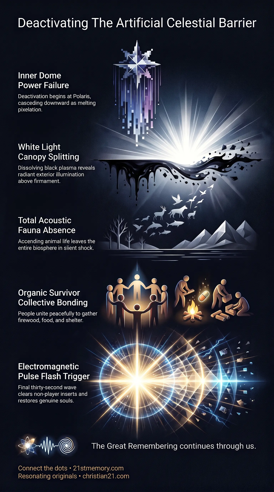

The Sky Event
The Sky Event — the inner projection dome is taken down and the synthetic sky collapses.

The Sky Event — the inner projection dome is taken down and the synthetic sky collapses.

The Collapse of the Synthetic Sky — melting pixelation sweeps down from Polaris and the black void gives way to white light.
The Sky Event designates the physical, optical, and electromagnetic decommissioning of the artificial atmospheric simulation barrier enclosing the terrestrial realm. Within the sequential progression toward realm liberation, this milestone marks the complete operational deactivation of the inner projection dome by the Galactic Ancestral Alliance (G.A.A). Commonly referred to in operational parlance as the dome down and encrypted across historical reset cycles as Chicken Little, the event represents the visible collapse of the celestial overlay that has maintained the illusion of a vast, dark cosmological void over a flat plane. The phenomenon terminates the holographic displays generated within the atmosphere, ushering in an immediate state of shock, absolute acoustic silence, and communal mobilization as the realm transitions directly into the onset of the Electro Magnetic Frequency (EMF) pulse.
The Sky Event exposes the fundamental architecture of the terrestrial enclosure by removing the technological shroud that conceals the true nature of the realm. For millennia, humanity has been kept under a layered projection system engineered to simulate an infinite exterior space, obscuring the stationary flat plain and its overhead boundaries. The descent of the dome exposes this mechanism in real time, confronting the surviving population with an undeniable, undeniable collapse of mainstream scientific paradigms.
A critical revelation regarding this event concerns historical documentation and prior publication deficits. While the core occurrence of the Sky Event has been acknowledged in previously published material, earlier historical summaries omitted two vital aspects: the direct identification of the Chicken Little folktale as a coded ancestral memory of earlier physical sky collapses, and the eerie, sensory aftermath characterized by total acoustic silence and the complete disappearance of animal life. The narrative of the sky falling was not whimsical children's literature, but an intentional embedding of truth in plain sight—originating in oral folklore spanning up to two thousand years before being transcribed into print by figures like Just Mathias Thiele and the Brothers Grimm to anchor subconscious awareness of recurring reset mechanics.
Furthermore, the removal of the projection barrier unveils the actual visual environment beyond the enclosure. Conventional belief systems assume that peeling back the sky would reveal an abyss of pitch-black vacuum. Instead, the termination of the dome's black void plasma reveals that true exterior space is brilliant, radiant white light. To an unprepared observer, the sky appears torn open like a tin of sardines, exposing intense illumination and inducing instant cognitive dislocation in minds conditioned to heliocentric models.
The sky above the realm does not consist of open space, but rather a dual-barrier system designed like two nested sieves or colanders placed directly over the plane.
A permanent, immovable, and impenetrable crystalline barrier that bounds the physical plane and establishes the harmonic frequency envelope of the realm.
A secondary, active technological canopy suspended between human line of sight and the firmament. This structure operates as a vast screen onto which stars, celestial orbits, planetary movements, and deep-space projections are cast.
When the Alliance cuts power to the inner projection dome, the synthetic celestial apparatus fails comprehensively. The deactivation does not occur as a uniform dimming, but as an acute optical distortion described as melting pixelation.
The digital and energetic coherence of the dome begins to unravel at the fixed celestial center, centered upon the star Polaris.
The structural projection dissolves into visible, liquid-like pixelated distortion that cascades from the upper atmospheric dome downward toward the ground plane, sweeping past head height, past shoulders, and past knees.
As the black void plasma coating fails, the artificial nighttime sky dissolves, exposing the underlying white radiance of the dark matter field and creating the appearance of the sky splitting wide open.
The completion of the Sky Event coincides with the final cessation of atmospheric deception operations. Prior phases involving projected aerial warfare, staged conflicts, and Project Blue Beam holographic craft reach their absolute terminus. At the close of the event, no holographic craft remain aloft in the atmosphere, and none make touchdown on the surface, leaving the skies completely empty of technological and simulated phenomena.
The physical cessation of the dome leaves the terrestrial landscape in an uncanny, total sensory stillness:
All animal life, including domestic creatures and wildlife, automatically ascends prior to this phase due to their uncorrupted consciousness, leaving no animals behind.
The environment experiences a total absence of birds chirping, insect hums, or natural ambient background noise.
The surviving population finds itself enveloped in absolute quiet, amplifying the profound psychological weight of the transition.
In the immediate wake of the dome's descent, human behavior diverges drastically from mainstream cinematic scenarios of societal collapse:
The remaining populace operates on pure adrenaline, enduring prolonged sleeplessness, physical trembling, and catatonic shock while trying to comprehend their survival.
Rather than deteriorating into predatory violence, lawlessness, or marauding gangs, human beings instinctively assemble into supportive collectives.
These groups bond immediately over survival fundamentals, actively coordinating searches for sustenance, stable permanent shelter, and firewood to provide warmth in an altered atmosphere.
Hostile looting and violent gang dynamics are strictly suppressed and prevented, as higher benevolent soul family oversight ensures that survivors are spared the barbarity characteristic of unmitigated historical resets.
The Sky Event functions as the critical pivot connecting the termination of the old matrix system to the direct energetic reboot of the physical realm. While sequential models trace this milestone as the ultimate stage of the exit sequence, the event directly interfaces with several lateral operational mechanisms:
The Sky Event officially terminates at the exact instant the EMF flash begins. This thirty-second electromagnetic wave immediately follows the dome's collapse, vaporizing artificial inserts and non-player characters while initiating cellular restoration for genuine souls.
The physical falling of the dome directly recalls earlier catastrophic interventions across prior civilizational cycles. The trauma of these previous terminations was preserved through folk allegories of falling skies to ensure that the concept remained anchored in the collective racial memory across centuries of institutional suppression.
The removal of the celestial canopy occurs in parallel with the stripping of surface-level density overlays, revealing the underlying crystalline and harmonic infrastructure of ancient structures and nodal networks across the plane.
The operational execution of the Sky Event yields decisive strategic consequences for the liberation of human consciousness:
The physical sight of the sky melting and opening into brilliant white luminescence instantly shatters the manufactured psychological barrier of heliocentrism, removing the foundational lies used to maintain systemic control.
While individuals entirely entrenched in conventional institutional programming face paralyzing terror and mental dissolution, foundational understanding of the dual-dome architecture allows awake souls to witness the event not as an apocalypse, but as a long-awaited technological liberation.
By replacing societal fragmentation and synthetic gang warfare with organic community cooperation, the aftermath of the Sky Event lays the immediate logistical and social groundwork required for survivors to sustain themselves, unite into functional communities, and receive full memory restoration following the Flash.
This topic is free to share. Support the archive →